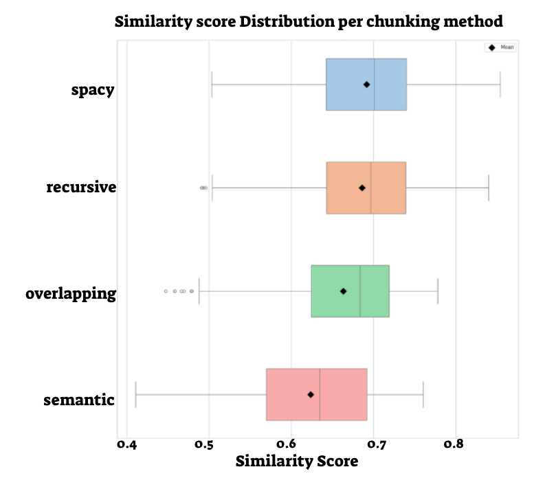
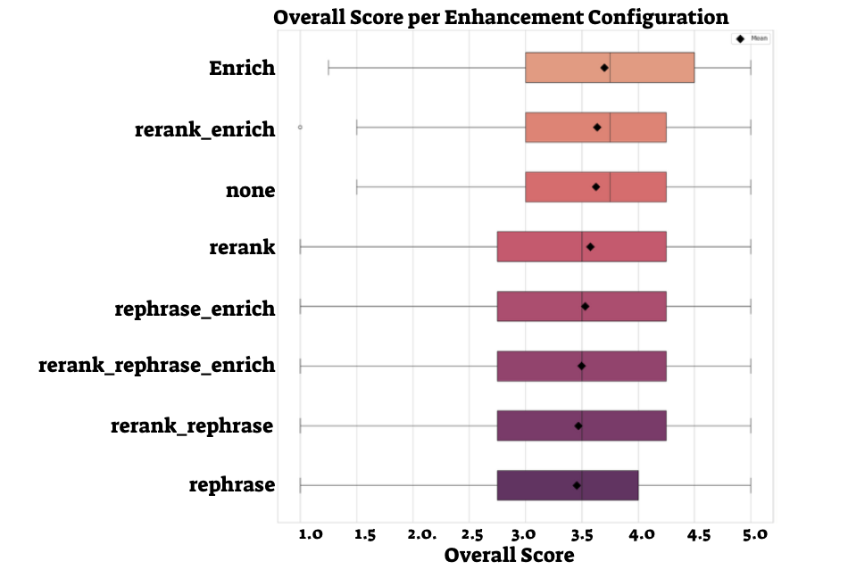

RAG for Terms & Services
A tool designed to help users understand legal terms through smart retrieval and clear, AI-generated responses.

Project Details
This project focuses on improving accessibility to legal documents through a Retrieval Augmented Generation (RAG) system. The system allows users to ask natural language questions about terms and services and receive clear, context-aware answers.
Multiple chunking and embedding strategies were explored and compared. The backend used vector search via Pinecone, and the front-end was built with Streamlit for usability and transparency. Beyond development, the project included an evaluation of the overall RAG pipeline measuring relevance, answer accuracy, and user experience across configurations.
Image Gallery
Screenshot of the RAG interface answering a terms-related question.

Comparing different Chunking methods based on similarity score with the query.

Comparing RAG enhancements overall score